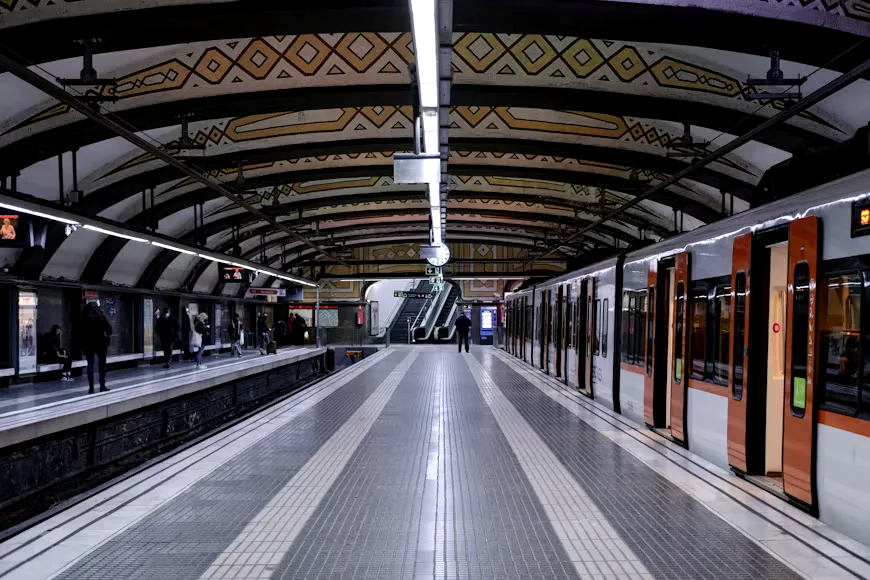

Smart mobility
Adaptive signals, live bus and metro tracking and one ticket for every mode.
- Live arrivals
- Smart parking
- Bike and EV sharing
Traffic, power, water, safety and public services now share one live platform. Pay a bill, report a fault or track your bus in seconds, and watch the city respond in real time.
Stackly turns the signals a city produces every second into clear actions. Every dataset is published, every service has a public target, and every resident can see how their city performs.
Move the pointer across the cards. Each service plugs into the same city data layer, so an update in one place improves all of them.
Adaptive signals, live bus and metro tracking and one ticket for every mode.
Smart meters, rooftop solar and a grid that balances itself during peak hours.
Leak detection, quality monitoring and fair, metered supply to every home.
Connected emergency dispatch, street lighting and privacy-safe monitoring.
Book clinics, get records on your phone and reach a doctor without the queue.
Certificates, licences and taxes online, with status you can track end to end.
Figures below refresh every few seconds from the city operations centre. They are a sample feed for this demonstration.
Every glowing arc is a live message between a sensor, a service and a person. Together they cut waiting times and keep the lights on.
A funded, phase-by-phase plan. Each milestone is published, audited and reported back to residents.
City data platform live, 12,000 sensors online and the citizen sign-in launched.
Unified ticketing across bus, metro and bikes, with adaptive signals on every arterial road.
Smart meters in every home, district solar microgrids and continuous leak detection.
Every city service reachable from a single account, with paperless approvals by default.
Renewable-powered grid, zero landfill waste and clean air in every district.
Three columns drift in opposite directions. Hover to pause and read, or open the full portfolio.

MobilityDriverless trains and signal priority linking 14 stations.
Shared records and tele-care across 60 neighbourhood clinics.
One account for permits, taxes, certificates and grievances.
Swipe, drag or use the arrows. Feedback like this decides what we build next.
The live bus tracker changed my mornings. I leave home when the bus is two stops away and I am never late.
 Meera IyerResident, Riverside
Meera IyerResident, RiversideSmart meters showed us which appliances waste power. Our household bill fell by a fifth in three months.
 Priya NairResident, Greenfield
Priya NairResident, GreenfieldThe open data programme gave our university team real traffic data. Three student projects now run on it.
 Dr. Arjun RaoProfessor, City Institute
Dr. Arjun RaoProfessor, City InstituteCreate a free citizen account to pay bills, track requests and get alerts for your own street. Get the weekly city bulletin too.
.webp)